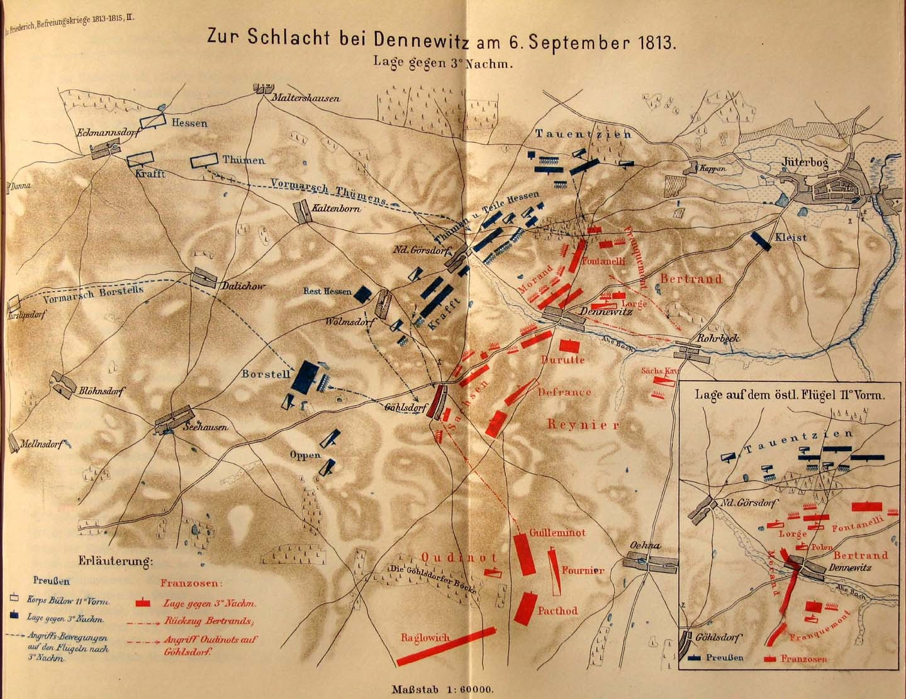
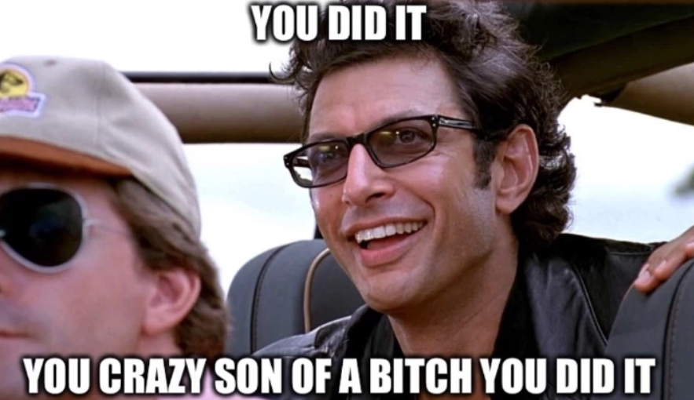
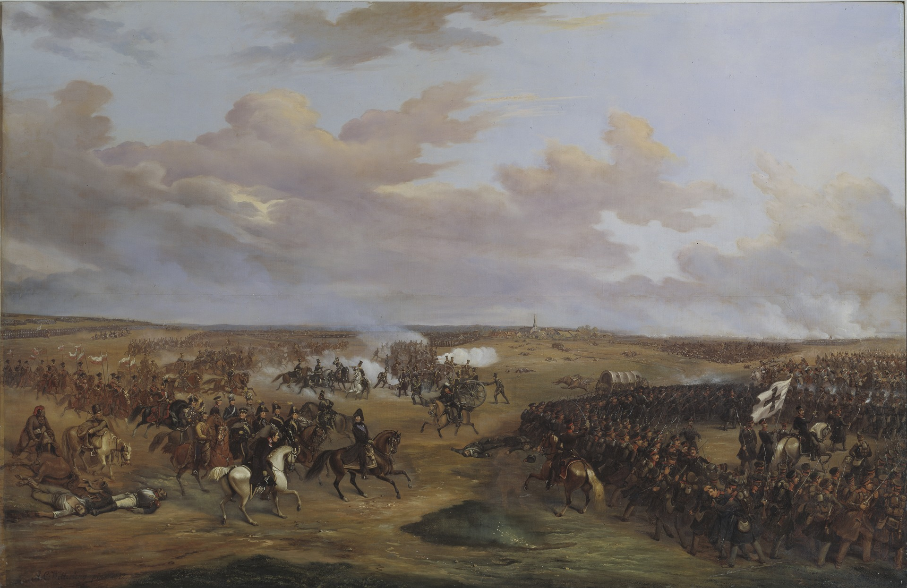
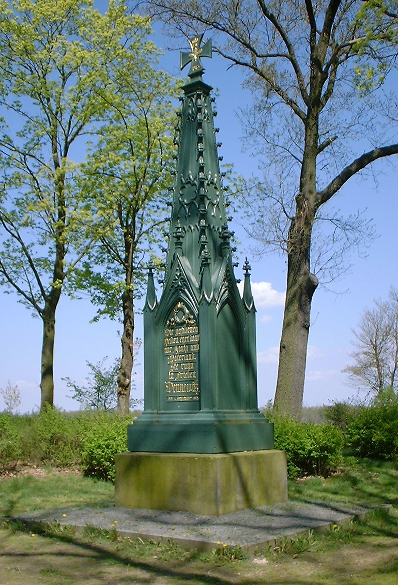
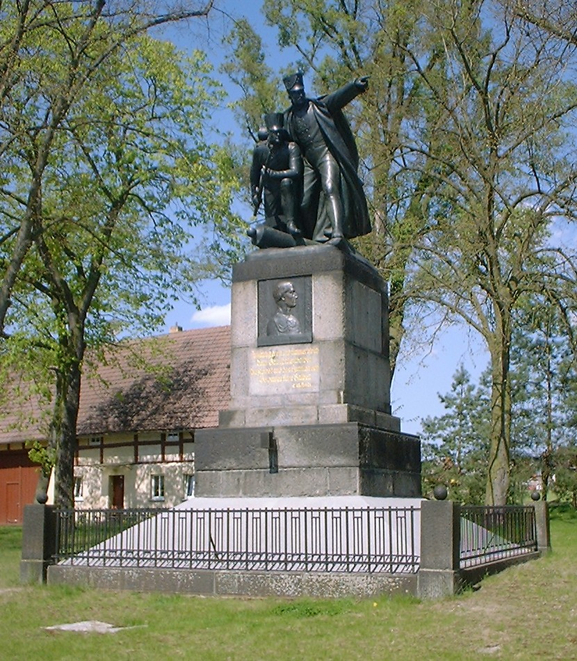

덴너비츠 전투 (4) - 습관성 삽질
게시: 2024-07-29T06:30:00+09:00
덴너비츠 전투가 한창 진행되던 오후 3시~4시까지의 전황은, 하나의 경로로 3개 군단을 움직이겠다는 네의 약간 비상식적인 계획이 결과적으로는 옳았다는 것을 증명하는 듯 했습니다. 후방에서 레이니에의 군단이 조금씩 도착하여 투입되면서 프랑스군은 좌익을 점점 더 넓고 강하게 전개할 수 있었던 것입니다. 만약 각 군단들이 각기 다른 경로를 통해 움직이다가 이렇게 뜻하지 않게 벌어진 전투에 다른 군단들이 제때 현장에 투입되지 못했다면 상황은 제2의 그로스비어런 전투처럼 되었을 것입니다. 이제 오후 4시경이 되어 우디노의 군단이 현장에 다 도착하자, 우디노도 현장에서 상황을 파악하고는 바로 코 앞에 있는 레이니에의 좌익으로 병력을 투입하여 프랑스군의 좌익을 더 넓히기 시작했습니다. 그렇게 되면 중과부적인 프로이센의 우익을 아예 측면에서 포위하며 말아올려 적군을 완파할 수 있기 때문이었습니다.

(1813년 9월 6일 오후 3시경의 모습입니다. 북서쪽의 프로이센군과 대치하고 있는 프랑스군(붉은색)은 좌익의 레이니에, 우익의 베르트랑으로 구성된 상황에서, 저 남서쪽에서 우디노의 제12군단이 달려오고 있는 상황도입니다. 지도 왼쪽 가운데 보이는 지명인 Seehausen과 지도 중앙에서 약간 오른쪽에 있는 Dennewitz의 거리는 약 7km입니다. 거의 2시간 행군거리입니다.) 아마 우디노의 속은 편치는 않았을 것입니다. 자신이 실패했던 임무를 네가 이제 막 성공시킬 판국인데, 정작 그 결정타를 날리는 역할이 바로 자기 자신에게 주어졌기 때문이었습니다. 전황이 이대로 이어져 네가 쾌승을 거둔다면 아마 우디노는 앞으로 두 번 다시 네와 맞먹을 입장이 되지 못할 것이 뻔했습니다. 그런데 바로 그 순간, 믿을 수 없는 일이 벌어졌습니다. 우디노에게 네의 명령서가 전달된 것입니다. 그 명령서의 내용은 레이니에의 좌익에서 물러나 북동쪽으로 더 행군하여 베르트랑과 함께 프로이센군 좌익을 격파하라는 것이었습니다. 프로이센군을 무너뜨릴 수 있는 이 결정적인 순간에 이 명령을 그대로 따른다면 우디노의 제12군단은 약 5~6km, 그러니까 1시간이 넘는 시간을 행군으로 낭비하게 되는 셈이었습니다. 대체 왜 그 결정적인 순간에 네가 그런 삽질 명령을 내렸는지는 불분명합니다. 혹자는 당일 불어닥친 강풍과 그로 인한 모래 먼지로 제대로 전황 파악을 못한 탓이라고도 하고, 혹자는 네의 궁극적 목표가 남동쪽의 루카우에 와 있을 나폴레옹과 연계하는 것이므로 프로이센군이 동쪽으로 후퇴하지 못하도록 하려 했다고도 합니다. 그리고 우디노의 비협조로 인해, 네에게는 각 군단 사정에 익숙한 방면군 참모 조직이 부실했다는 점도 이런 치명적인 실수에 한몫을 했을 것입니다. 아무튼 네는 바우첸 전투에서도 그랬지만 여기서도 결정적인 순간에 삽질을 했고, 2년 후 워털루에서도 치명적인 실수를 저질렀습니다. 알고 보면 버릇인 모양이에요.

(최근 인터넷에서 본 밈입니다. 아마 주라기 공원 시리즈 중 한 장면인 모양이에요. 아무튼 이때의 네에게 정말 딱 어울리는 짤입니다.) 그러나 분명한 것은 하나 있습니다. 우디노는 그 상황에서 자신이 그 명령을 그대로 따른다면 애써 잡은 승리를 날려먹을 수 있다는 것을 분명히 알고 있었습니다. 그런데도 그는 갑자기 '군인은 명령에 살고 명령에 죽는다'라는 헛소리의 신봉자가 되었는지 네의 명령을 너무나 충직하게 지켜 전선에서 물러나 프랑스군의 우익으로 행군을 시작했습니다. 이를 본 레이니에는 전령을 보내 '여기에 머물러 좌익을 보강해달라'고 애원했습니다만 우디노는 '군인은 명령에 따를 뿐'이라며 못 들은 척 했습니다. 상황은 매우 심각했습니다. 우디노의 군단이 좌익에 가세하자 프로이센군은 최후의 몸부림으로 마지막 예비대까지 투입하여 맹반격을 시도하고 있었기 때문이었습니다. 이를 보다 못한 우디노 휘하의 연대장 하나는 명령을 거부하고 레이니에의 좌익에 남기도 했습니다. 그러나 우디노는 정말 상관하지 않고 물러났습니다. 든 자리는 몰라도 난 자리는 안다는 속담은 특히 전장에서 실감이 나는 말입니다. 이렇게 우디노의 군단이 갑자기 물러서자, 그 앞에 있던 프로이센군은 자신들의 공격에 프랑스군이 후퇴한다고 생각하고 사기가 급등했습니다. 축구나 전투나 기세라는 것이 중요한데, 이건 정말 치명적인 변화였습니다. 게다가 아직 결정타가 남아있었습니다. 바다와 전장에는 많은 공통점이 있는데, 그 중 하나가 시간을 날려버린 자를 용서하지 않는다는 것입니다. 이렇게 우디노가 1시간 동안 쓸데없는 행군을 하는 동안, 결국 올 것이 왔습니다. 바로 베르나도트였습니다. 베르나도트는 러시아군과 스웨덴군 총 4만5천, 특히 뷜로와 타우엔치언에게 매우 부족했던 포병대 150문을 거느리고 오후 5시경 드디어 현장에 나타났습니다. 가장 안 좋았던 부분은 베르나도트는 현장에 나타나자마자 전황을 파악하고는 막 무너지기 시작하던 레이니에 쪽을 집중 공격했다는 것이었습니다. 결과는 전체 베를린 방면군의 붕괴였습니다. 네와 레이니에가 동분서주하며 병사들을 독려했지만, 무너지기 시작한 베를린 방면군은 오후 6시부터는 완전히 무질서하게 패주하기 시작했습니다. 이렇게 덴너비츠 전투는 또 다시 베를린 방면군의 패배로 끝났습니다만, 1차 패배인 그로스비어런의 패배보다 더욱 좋지 않았습니다. 그때는 베르나도트의 소극적 태도 때문에 북부 방면군의 추격이 거의 없었지만, 이번에는 베르나도트가 1만의 기병대를 동원하여 맹렬한 추격에 나섰기 때문이었습니다. 9월 6일의 전투에서는 양측이 거의 대등하게 약 1만 정도씩의 사상자를 냈는데, 그날 저녁과 그 다음날까지 이어진 추격전에서 베르나도트는 1만3천의 포로와 함께 많은 대포와 짐마차를 노획했습니다. 나중에 최종적으로 네가 집계하여 보고한 바에 따르면 베를린 방면군은 총 23,215명의 사상자 및 포로, 4기의 독수리 깃발, 53문의 대포, 413대의 짐마차를 상실했습니다.

(덴너비츠 전투를 그린 그림입니다. 가운데 약간 왼쪽에서 갈색 말을 탄 채 뒤를 돌아보는 사람은 베르나도트입니다. 제가 확대해서 봤지만 화가가 사람 얼굴을 잘 그리는 편은 아니더군요. 베르나도트가 가운데 서있는 구도를 보고 눈치채셨겠지만, 이 그림은 19세기 스웨덴의 장교이자 화가였던 Alexander Wetterling의 작품입니다.)

(막타를 친 것은 비록 베르나도트였지만 누가 뭐래도 덴너비츠 승리의 주역은 뷜로와 타우엔치언의 프로이센군이었습니다. 이 사진은 덴너비츠에 서있는 프로이센측의 승전 기념비입니다.) 베를린 방면군의 패주는 그야말로 궤멸적이어서, 심지어 주요 지휘관들조차 뿔뿔이 흩어질 정도였습니다. 우디노와 레이니에는 남쪽으로 약 50km 떨어진 엘베 강변의 요새 토르가우(Torgau)로 물러났고, 네는 베르트랑과 함께 원래 목표 지점이었던 남동쪽의 담머로 갔습니다. 아마도 네는 여전히 나폴레옹이 루카우에 있을 것이라고 생각했던 모양입니다. 그러나, 다음 편에서 보시겠지만 나폴레옹은 끝내 루카우로 오지 못했습니다. 나폴레옹이 루카우에 오지 않았다는 소식을 접한 네는 결국 베르트랑과 함께 토르가우로 힘없는 발걸음을 옮겨야 했습니다. 네의 완패 소식이 나폴레옹에게 보고되는 자리에는 생시르도 있었는데, 생시르가 전하는 바에 따르면 그 참담한 소식을 듣는 나폴레옹은 마치 '머나먼 중국에서 일어난 일에 대해 보고를 받는 것처럼 침착했다'고 합니다. 나폴레옹이 대체 무슨 생각을 하고 있었는지는 알 수 없습니다만, 네의 생각은 그가 보낸 편지를 통해 알 수 있습니다. 어떻게 생각하면 네가 우디노 탓을 할 수 있었을 것 같기도 한데, 상남자였던 네는 최소한 막도날처럼 부하들 탓을 하는 추태를 부리지는 않았습니다, 그는 베르티에에게 보내는 편지에서 '내가 패배했고, 베를린 방면군이 재규합할 수 있는지 아직 잘 모르겠습니다'라고 담담히 적었는데, 거기서 한발 더 나아가 '황제의 좌익(베를린 방면군을 지칭)은 완전히 지친 상태라는 것을 외면하지 마십시요 -- 이젠 엘베 강을 떠나 잘러(Saale) 강으로 물러나야 할 때라고 생각합니다'라고 적었습니다. 네도 다른 원수들처럼 지긋지긋한 전쟁을 때려치우고 평화를 원했던 것일까요? 네의 말대로 잘러 강으로 물러서면 뭔가 전황 개선이 이루어졌을까요? 최소한 평화 협상을 위한 출발점은 될 수 있었을 것입니다.
그러나 나폴레옹에게는 이렇게 체면을 구긴 상황에서 평화를 구걸할 생각은 전혀 없었고 오히려 연합군을 각개격파할 기회가 충분하다고 판단했습니다. 하지만 나폴레옹이 덴너비츠 전투의 결과표를 좀더 유심히 살펴보았다면 사태가 심상치 않다고 판단했을 것입니다.
프랑스군과 함께 그랑다르메의 근간을 이루던 큰 축인 그의 라인연방 동맹군들이 흔들리고 있었습니다.

(덴너비츠 교회에 서있는 승전 기념비입니다. 가운데 동판에 새겨진 것은 뷜로의 얼굴입니다.) Source : The Life of Napoleon Bonaparte, by William Milligan Sloane Napoleon and the Struggle for Germany, by Leggiere, Michael V With Napoleon's Guns by Colonel Jean-Nicolas-Auguste Noël https://en.wikipedia.org/wiki/Battle_of_Dennewitz https://battlefieldanomalies.com/napoleonic-wars/the-battle-of-dennewitz